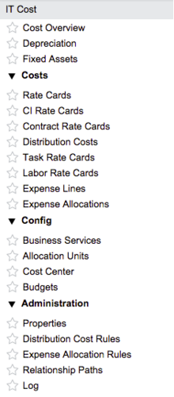

Cost Management
| |
Note: This article applies to Fuji. For more current information, see Cost Management at http://docs.servicenow.com
The ServiceNow Wiki is no longer being updated. Please refer to http://docs.servicenow.com for the latest product documentation. |
Contents
1 Overview
IT cost tracks configuration item costs. The costs can be allocated to business units and used in reports. Specifically, IT cost enables these features:
- Using rate cards.
- Defining configuration item (CI) costs.
- Tracking one-time costs for CIs.
- Processing recurring CI costs to generate expense lines.
- Distributing bulk costs to multiple expense line sources.
- Tracking costs related to tasks and projects.
- Aggregating configuration item costs and charging the total cost to a business service or application
- Allocating expense lines to business units with flexible allocation rules.
- Tracking planned and actual budget costs by cost center.
2 IT Cost Options
Use the following IT cost options to plan and control business costs.
- Create rate cards to properly track configuration item, contract, task, and labor costs.
- Create expense lines and expense allocation rules.
- Aggregate configuration item costs and apply the total cost to a business service or application using relationship paths.
- Create distribution costs and distribution cost rules to divide costs between a group of records.
3 Roles
IT cost uses the following user roles:
| Role title [name] | Description |
|---|---|
| financial admin | Manages financial processes in the system. |
| financial user | Participates in financial processes and has limited access to functionality. |
| |
Note: The IT Finance application also uses these roles, starting with the Fuji release. |
A user with the user_admin or admin role can assign the appropriate roles. For more information about user administration and instructions for assigning roles, see Creating Users and Associating to a Group.
4 Menus and Modules
Activating the IT Cost Management feature adds the IT Cost application menus.
| |
Note: The application name in the navigator is Financial Management prior to the Fuji release. |
|  |
|
{kind=link}
5 Activating IT Cost Management
Administrators can activate the IT Cost Management plugin.
| Click the plus to expand instructions for activating a plugin. |
|---|
|
If you have the admin role, use the following steps to activate the plugin.
|
6 Enhancements
6.1 Fuji
- The application name appears as IT Cost in the application navigator. The plugin name remains IT Cost Management.
6.2 Dublin
- The plugin is named IT Cost Management.
- Only users with the financial_mgmt_admin or admin role can customize the Cost Overview page.
- The contract rate card end date is automatically set to the contract end date if no value is entered.